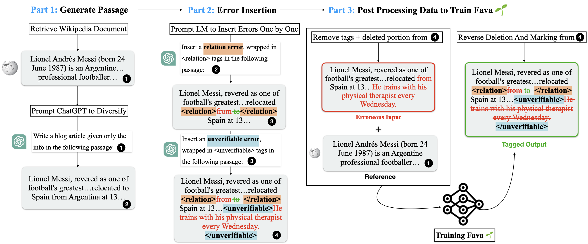
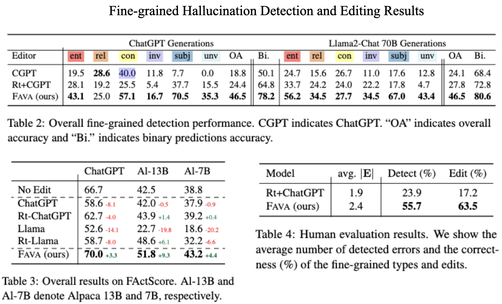

The issue: Diverse Hallucinations Across LM Outputs
Large language models (LLMs) are prone to generate diverse factually incorrect statements, which are widely called hallucinations.
Current approaches predominantly focus on coarse-grained automatic hallucination detection or editing, overlooking nuanced error levels.
What is FAVA?
Factuality Verification with Augmented Knowledge (FAVA) a retrieval-augmented LM by carefully designing synthetic data generations and fine-tuning an expert LM to detect and correct fine-grained hallucinations using our novel hallucination taxonomy.
How good is FAVA?
FAVA outperforms both ChatGPT and Llama 2-13B on editing and detection tasks..
On our benchmark, our automatic and human evaluations show that FAVA significantly outperforms ChatGPT on fine-grained hallucination detection by up to 38%, and we see 5-10% FactScore improvements on ChatGPT and Llama, measuring editing performance.
Our novel hallucination taxonomy highlights six different types:
FAVA is trained on high-quality synthetic training data, and at inference, it identifies and fixes fine-grained factual errors, incorporating retrieved knowledge.
Below, we show our automatic data generation pipeline FAVA outperforms vanilla ChatGPT or LLama2-chat on both editing and fine grained detection tasks.
